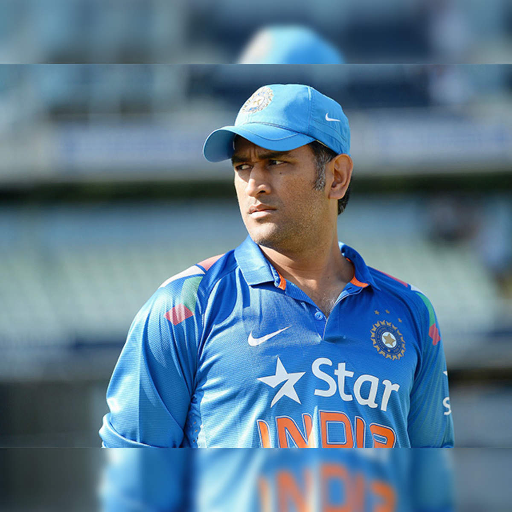

MS.Dhoni

Thala
-
Dhoni was born in 7,july 1981 in Ranchi,Bihar.
-
Dhoni was right handed batter and wicket-keeper.
-
Dhoni was most successful captain.
-
Under Dhoni captaincy,India win t20 world cup 2007 and ODI world cup 2011.
-
Dhoni's nickname is thala.
-
Dhoni was a finishing role of batsman.
-
Dhoni was retired in 2019.